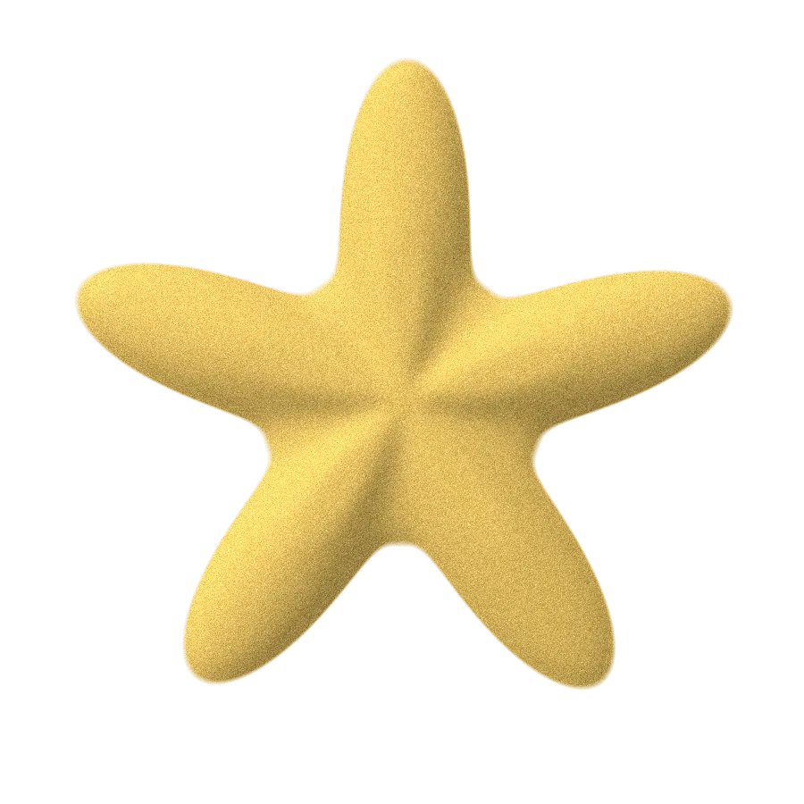
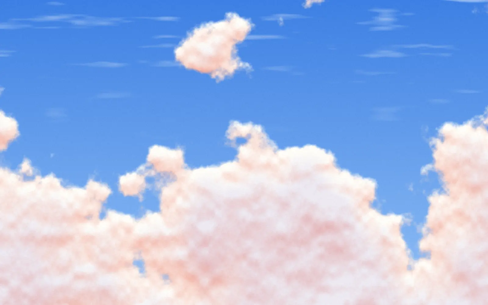

Общага. На кухне — плита. На плите — чайник. Двухэтажный.
Ты только приехал в Анталью. Твой турецкий — «merhaba» и «teşekkürler».
Первый вечер. Хочется чаю. На плите два чайника, один стоит на другом.
Думаешь: турки экономят место.
Библиотека · A2 · — кухня
Заварить чай, не обжечься о стаканчик и правильно сказать спасибо хозяйке. Этому здесь и учим.

История № 1 · тред
Общага. На кухне — плита. На плите — чайник. Двухэтажный.
Ты только приехал в Анталью. Твой турецкий — «merhaba» и «teşekkürler».
Первый вечер. Хочется чаю. На плите два чайника, один стоит на другом.
Думаешь: турки экономят место.
Снимаешь верхний. Наливаешь воду. Ставишь на огонь. Ждёшь.
Заходит сосед Эмре. Смотрит на тебя. Смотрит на чайник. Говорит:
Ты: .
Эмре:
Что такое demlik? Эмре объясняет.
Снизу — там кипяток. Сверху — там заварка. Пар от нижнего греет верхний.
Два этажа. Одна система.
А ты двадцать минут кипятил заварочник.
Эмре заварил чай. Налил в стаканчик без ручки. Ты взял за стенки. Обжёгся.
Эмре: за ободок держи. Сверху.
Ты: а ручку приделать нельзя было?
Эмре: abi, это . У него нет ручки. У него есть традиция.
Верхний этаж больше не кипятим. Договорились?
Нажми на этаж
Сверху или снизу? Нажми.
Ритуал · 4 шага · листай
Эмре посмотрел на твой заварочник. Вздохнул. Говорит: смотри, показываю один раз.
Вскипяти воду. В нижнем этаже.
Нижний этаж — для воды. Теперь ты это знаешь.
Засыпь заварку в demlik и залей кипятком снизу.
Заварка — наверх. Воду — снизу. Не наоборот.
Пусть настаивается пятнадцать минут на слабом огне.
Пятнадцать. Не десять. Эмре стоит с телефоном и проверяет.
Налей в стаканчик: сначала заварку, потом кипяток.
Цвет — , «заячья кровь». Звучит жутко. Выглядит красиво.
Тебе наливают чай и спрашивают
Светлый или крепкий? Нажми на стаканчик — услышишь ответ. Эмре пьёт koyu. Тётя Айше пьёт açık и осуждает всех остальных.
Карта · 26 предметов · озвучка
Холодильник скажет buzdolabı, плита — ocak. Потом включи игру: слышишь слово — ищешь предмет.
На телефоне кухню можно двигать пальцем влево и вправо.
Mutfak · кухня
Нажми на любой предмет — услышишь, как он звучит по-турецки.
холодильник
buzdolabı
[буздолабы]
Раунд 1/8 · очки 0
Найди:
Слушай и нажимай на предмет.
Нажми на карточку — предмет подсветится на кухне.
Конструктор
Холодильник — ледяной шкаф.
Солонка — соляница.
Микроволновка — микроволна.
Тебе дали кубики. Собирай.
Второе слово получает окончание -ı / -i / -u / -ü. После гласной — -sı / -si / -su / -sü.
Глухая на конце может смягчиться: p → b, k → ğ.
-lık превращает «что» в «штуку для этого».
Гласная внутри подстраивается под последнюю гласную слова: a, ı → ı · e, i → i · o, u → u · ö, ü → ü.
«В» и «на» — не предлог, а хвост: -da / -de. После глухих согласных — -ta / -te.
Глухие запомни фразой Fıstıkçı Şahap — «фисташковый Шахап»:
Что?
Где?
Süt nerede?
История № 2 · тред
На этаже живёт тётя Айше. Её менемен пахнет на весь этаж.
Однажды она стучит. Протягивает тарелку: Бери, ешь.
Ты съел. Помыл тарелку. Отнёс. Говоришь:
Тётя Айше смотрит так, будто ты сказал «ну, нормально».
Говорит: oğlum, так не говорят. Говорят
«Здоровья вашим рукам». Тому, кто готовил, — только так.
А повар ответит:
Повторяешь: Elinize sağlık. Тётя Айше расцвела.
Через день — ещё тарелка. Потом ещё.
Тарелку, кстати, пустой не возвращают. Это обычно узнают на третьей.
Менемен был с луком. Об этом в Турции спорят до сих пор.

Молоко на плите. Ты — в телефоне.
Эмре кричит из коридора:
Что «тошты»? Taştı. Перелилось. Убежало.
Прибегаешь. Молоко на плите, на полу, на тапке. Эмре: Выключи плиту.
Плиту отмывать до ночи. Зато taşmak запоминается навсегда.
Сначала угадай · потом переверни
Обрати внимание: сколько слов с нашей кухни ты узнаешь сразу?
Без шпаргалки. Пять вопросов.
— вскипяти воду
— заварку наверх
— пятнадцать минут
— налей
buz + dolap → buzdolabı
второе слово: -ı / -sı, глухая смягчается
-lık: tuzluk, şekerlik, ekmeklik
-da / -de, после глухих -ta / -te
masada · tencerede · dolapta · buzdolabında
глухие — Fıstıkçı Şahap
— тому, кто готовил
— тому, кто ест
— беги к плите
Помнишь двухэтажный чайник? Теперь ты знаешь, где кипяток, где заварка и за что держать стаканчик.
Двадцать шесть предметов звучат. Три конструктора собирают новые слова. А тётя Айше услышит правильное спасибо.